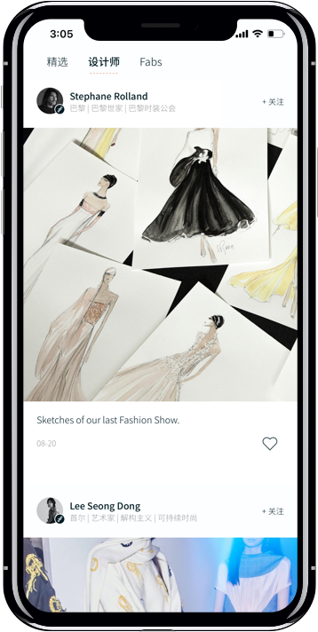

Fabrique 设计师款到底值不值？一笔为品味买单的决策账本
Fabrique 以设计师限量合作模式切入女装市场，定价介于快时尚与奢侈品牌之间。本文从定价拆解、三类用户算账、替代方案对比三个维度，把为它花钱这件事算明白。
开头直接抛问题：它到底值不值得掏钱？
我用 Fabrique 大概一年半了，前前后后在上面买了十来件衣服。每次下单前我都会反复问自己同一个问题——这件比淘宝同款贵两到三倍，凭什么？是设计师签名、限量编号、还是那个随叫随到的 Stylist？
Fabrique 的商业模式说白了很简单：去Fabrique官网就能下，Stylist 免费配，设计师款按"限量合作"定价。但"免费的服务"不代表"免费的体验"——你最终要为那些独家设计和品牌定位买单。这笔账得从三个层面拆开算。

定价拆解：免费的壳，溢价的核
去官方下载装好就能用，Fabrique 本身也不收取会员订阅费，所有注册用户都能享受基础服务：每周四的上新栏目、Fabs 社区、以及刚才提到的专属 Stylist。官方公开信息显示，Stylist 是真人顾问而非 AI，工作日几小时内回复、周末稍慢，但全程跟进不换对接人——这一点在国内时尚 App 里确实少见。
真正的付费环节发生在你下单的时候。Fabrique 合作 400+ 设计师，包括 Vera Wang、Stephane Rolland 这样的国际大牌，也有大量国内新锐设计师。每件商品标注"限量"，卖完即止，不补货。定价策略介于快时尚（ZARA、H&M 的通勤装普遍在两三百元）和奢侈品牌（一线品牌基础款动辄五六千元）之间，单品价格集中在 800 到 3000 元区间，设计师联名或高端系列可能更高。
这个定价逻辑不是"成本加价"，而是"价值锚定"——同样一条连衣裙，印上 Vera Wang 的名字、附上设计短片、加上限量编号，就敢比版型相似的淘宝款贵出两到三倍。Fabrique 把这笔溢价包装成"为设计买单"，但买账与否完全取决于你对"设计溢价"这件事的敏感度。
三类用户各算各的账
把用户分成三个层次，算一算每类人每年在 Fabrique 上的投入和产出。
轻度用户：每季一到两件，试试水
这类用户注册 Fabrique 主要是图新鲜，偶尔看到喜欢的款才下单，一年消费控制在 2000 到 5000 元。对他们来说，Stylist 的功能用得不多，Fabs 社区也很少逛，基本就是把 App 当成一个"看设计师联名款"的窗口。
时间账：花在挑选、比价、纠结尺码上的时间和其他购物 App 差不多，Stylist 帮不上太多忙，因为本身就买得少。溢价部分纯粹是为"喜欢某件设计"付的。
结论：轻度用户最容易踩坑——头脑一热下单的设计师款可能穿两次就压箱底，溢价被完全浪费。但如果真的看中了某款、确认自己会穿很久，那这笔钱花得值，毕竟 Fabrique 上有些设计在快时尚品牌里确实找不到。
主力用户：每季都买，Stylist 是真工具
这类用户把 Fabrique 当成主要购衣渠道，每季四到六件，年消费在 1.5 万到 3 万元。他们会固定使用 Stylist 做两件事：选尺码、找搭配。身高体重发给顾问，顾问会结合款式版型和社区参考给建议，或者翻Fabrique文档也能查到完整的尺码指南——这个功能对身材不标准、穿版型容易踩雷的人来说，一年下来能省下的退换货时间和运费，算下来可能就有两三千元。
时间账：Stylist 平均每次回复两小时以内，一年帮你避掉大概 5 到 8 次尺码错误，每次节省 30 分钟退换流程和大约 15 元运费。一年省出 3 到 4 小时和 75 到 120 元。更重要的是，因为顾问了解你的风格偏好，推荐的命中率比自己瞎逛高很多——这部分时间价值没法精确算，但体感上确实省事不少。

结论：主力用户最能发挥 Fabrique 的价值。Stylist 的真人服务在这个消费频率下开始产生正收益，限量款模式也让你买到的衣服不容易撞款。但前提是你真的需要"每季更新衣橱"——如果衣橱已经满到塞不下，再精致的设计师款也是负担。
重度用户：全衣橱靠它，Fabrique 是生活方式
这类用户每季十件以上，年消费超 5 万元。Stylist 不仅帮选款选码，还会主动提醒上新、根据你的穿着反馈调整后续推荐。他们可能会关注合作设计师的动态、追联名系列、甚至偶尔去兴业太古汇的线下精品店逛逛。
时间账：Stylist 相当于你的私人衣橱顾问，你不需要自己刷上新、不需要到处找穿搭灵感、甚至售后问题都可以直接甩给顾问处理——按年消费 5 万计算，你为每件衣服付的溢价大约在 2000 到 3000 元，其中大约 500 元是为"顾问服务"付的。这相当于一个非常便宜的私人造型师。
结论：重度用户闭眼付。但我必须提醒——走到这一步的时候，你要分清楚自己是在"为喜欢的设计买单"还是"为 Fabrique 营造的精致生活方式叙事买单"。后者是一个无底洞，每周四的上新会让你永远觉得衣橱还缺一件。
替代方案：不付这笔钱有什么别的路
如果 Fabrique 的定价让你犹豫，其实还有几条路可以走，但每条都有代价。
路线一：快时尚 + 独立设计师店。ZARA 的版型和 Fabrique 有重叠，基础款通勤装完全可以用快时尚。真想买点有设计感的，可以去淘宝找独立设计师店——国内很多新锐设计师也开了淘宝店，价格比 Fabrique 便宜一半甚至更多。代价是你要花更多时间淘货、比对版型，而且售后退换得自己来。
路线二：Fabrique 观望 + 打折季捡漏。Fabrique 虽然标"限量"，但偶尔会有季末清仓，折扣力度能到三到五折。蹲打折季捡漏是个好策略，但热门款通常不会进入清仓池。代价是要等，而且等你想买的时候尺码可能已经不全了。
路线三：线下专柜 + 二手平台。国际大牌设计师款可以去专柜试穿，国内设计师款很多在买手店也能找到。想买 Fabrique 上某些下架的限量款？闲鱼上偶尔会有用户出售，价格比原价低。代价是二手件的品相和真伪需要自己判断，线下试穿也要花费时间。
结论：哪类人该付，哪类人该再等等
把账本合上，最后给三个明确的判断：
闭眼付——你已经稳定每季在 Fabrique 上消费三到五件以上，Stylist 帮你省了大量时间和退换货成本，而且你确实不喜欢撞款。溢价对你来说是买"合身 + 独特 + 省事"，这笔钱花得明明白白。
再等等——你只是偶尔心动一件，但不确定自己会不会真的穿很久。Fabrique 的设计确实有独到之处，但溢价不是白给的。先去线下精品店试穿一下，再去淘宝搜搜有没有类似版型，冷静一周再下单。
永远不用付——你穿衣风格基本固定在快时尚或传统品牌，对"限量"和"设计师"的溢价不敏感，或者你的衣橱已经饱和到穿不完新买的衣服。Fabrique 的任何功能对你来说都是冗余，省下这笔钱去健身或旅行可能更值。
我最后一次下单是上个月的 Vera Wang 联名系列。那件连衣裙穿去朋友的婚礼，好几个人问我在哪买的。说实话，那一刻我觉得溢价付得挺值。但我也清楚，如果我下个月再看到喜欢的款，我还会再算一遍这本账——毕竟，为品味买单这件事，最容易让人失去理智。写这篇账本的时候翻遍了 Fabrique 的各种资料，这些整理好的文档也分别落在了GitHub、Gitee 和GitCode，挑哪个顺手就去哪个。